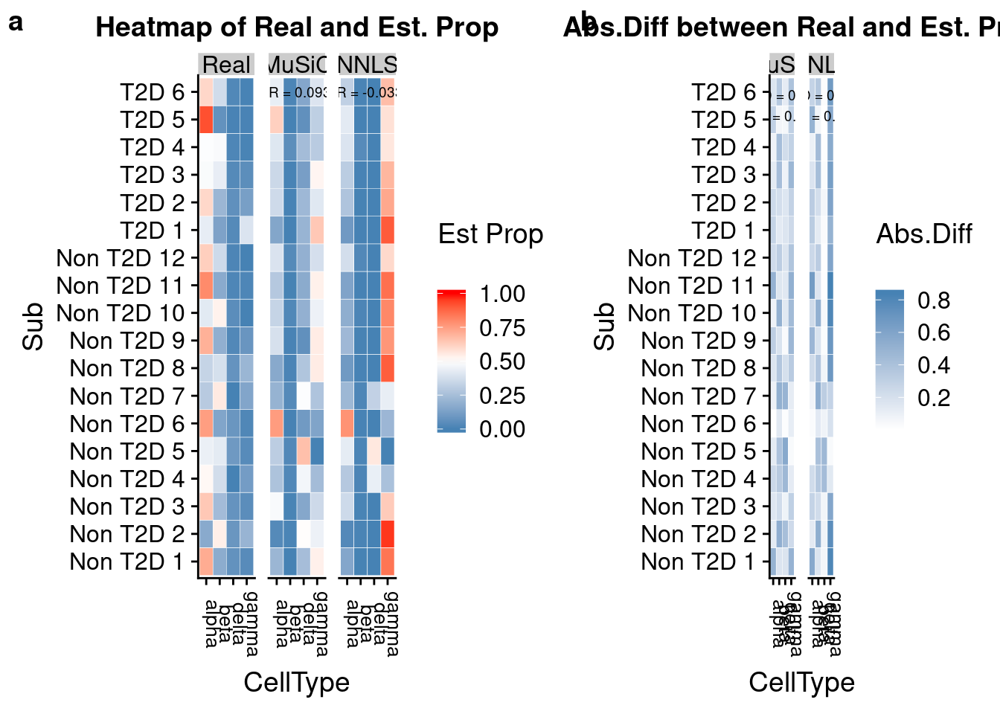

Last updated: 2020-09-16
Checks: 7 0
Knit directory: deconference/
This reproducible R Markdown analysis was created with workflowr (version 1.6.2). The Checks tab describes the reproducibility checks that were applied when the results were created. The Past versions tab lists the development history.
Great! Since the R Markdown file has been committed to the Git repository, you know the exact version of the code that produced these results.
Great job! The global environment was empty. Objects defined in the global environment can affect the analysis in your R Markdown file in unknown ways. For reproduciblity it’s best to always run the code in an empty environment.
The command set.seed(20200403) was run prior to running the code in the R Markdown file. Setting a seed ensures that any results that rely on randomness, e.g. subsampling or permutations, are reproducible.
Great job! Recording the operating system, R version, and package versions is critical for reproducibility.
Nice! There were no cached chunks for this analysis, so you can be confident that you successfully produced the results during this run.
Great job! Using relative paths to the files within your workflowr project makes it easier to run your code on other machines.
Great! You are using Git for version control. Tracking code development and connecting the code version to the results is critical for reproducibility.
The results in this page were generated with repository version d8960e8. See the Past versions tab to see a history of the changes made to the R Markdown and HTML files.
Note that you need to be careful to ensure that all relevant files for the analysis have been committed to Git prior to generating the results (you can use wflow_publish or wflow_git_commit). workflowr only checks the R Markdown file, but you know if there are other scripts or data files that it depends on. Below is the status of the Git repository when the results were generated:
Ignored files:
Ignored: .Rhistory
Ignored: .Rproj.user/
Untracked files:
Untracked: analysis/multiIndNormal.Rmd
Untracked: analysis/multiref_seger.Rmd
Untracked: analysis/music_weights.Rmd
Untracked: analysis/plotGeneVar.Rmd
Untracked: data/EMTAB5061Segerstolpe/
Untracked: data/GSE129788/
Untracked: data/GSE141115/
Untracked: data/GSE81547Enge/
Untracked: data/GSE81608Xin/
Untracked: data/GSE84133Baron/
Untracked: data/GSE85241Muraro/
Untracked: data/MuSiC/
Untracked: data/cibersort/
Untracked: data/pancreas/
Untracked: data/pbmc3k/
Untracked: data/robots.txt
Untracked: data/toSCE.R
Untracked: output/Xin_bycelltype_hc2.RData
Untracked: output/Xin_bycelltype_hc3.RData
Untracked: output/Xin_sampleM_hc2.RData
Untracked: output/Xin_sampleM_hc3.RData
Untracked: output/Xin_sampleM_unadj.RData
Untracked: output/Xin_universal_hc0.RData
Untracked: output/Xin_universal_hc2.RData
Untracked: output/Xin_universal_hc3.RData
Untracked: output/bulkref_pbmc_allgene_refls05_bulkls50.RData
Untracked: output/bulkref_pbmc_allgene_refls10_bulkls50.RData
Untracked: output/bulkref_pbmc_allgene_refls1_bulkls50.RData
Untracked: output/bulkref_pbmc_allgene_refls3_bulkls50.RData
Untracked: output/bulkref_pbmc_allgene_refls50_bulkls50.RData
Untracked: output/bulkref_pbmc_allgene_refls5_bulkls50.RData
Untracked: output/bulkref_pbmc_fewgene_refls05_bulkls50.RData
Untracked: output/bulkref_pbmc_fewgene_refls10_bulkls50.RData
Untracked: output/bulkref_pbmc_fewgene_refls1_bulkls50.RData
Untracked: output/bulkref_pbmc_fewgene_refls3_bulkls50.RData
Untracked: output/bulkref_pbmc_fewgene_refls50_bulkls50.RData
Untracked: output/bulkref_pbmc_fewgene_refls5_bulkls50.RData
Untracked: output/bulkref_pbmc_markergene_refls05_bulkls50.RData
Untracked: output/bulkref_pbmc_markergene_refls10_bulkls50.RData
Untracked: output/bulkref_pbmc_markergene_refls1_bulkls50.RData
Untracked: output/bulkref_pbmc_markergene_refls3_bulkls50.RData
Untracked: output/bulkref_pbmc_markergene_refls50_bulkls50.RData
Untracked: output/bulkref_pbmc_markergene_refls5_bulkls50.RData
Untracked: output/bulkref_simu_G1000_K4_refls05_bulkls50.RData
Untracked: output/bulkref_simu_G1000_K4_refls10_bulkls50.RData
Untracked: output/bulkref_simu_G1000_K4_refls1_bulkls50.RData
Untracked: output/bulkref_simu_G1000_K4_refls3_bulkls50.RData
Untracked: output/bulkref_simu_G1000_K4_refls50_bulkls50.RData
Untracked: output/bulkref_simu_G1000_K4_refls5_bulkls50.RData
Untracked: output/bulkref_simu_addw_G1000_K4_refls10_bulkls50.RData
Untracked: output/bulkref_simu_addw_G1000_K4_refls1_bulkls50.RData
Untracked: output/bulkref_simu_addw_G1000_K4_refls3_bulkls50.RData
Untracked: output/bulkref_simu_addw_G1000_K4_refls5_bulkls50.RData
Untracked: output/bulkref_simu_correction_G1000_K4_refls05_bulkls50.RData
Untracked: output/bulkref_simu_correction_G1000_K4_refls1_bulkls50.RData
Untracked: output/bulkref_simu_correction_G1000_K4_refls3_bulkls50.RData
Untracked: output/bulkref_simu_correction_addw_G1000_K4_refls1_bulkls50.RData
Untracked: output/bulkref_simu_correction_addw_G1000_K4_refls3_bulkls50.RData
Untracked: output/multiref_all.RData
Untracked: output/multiref_baron.RData
Untracked: output/multiref_enge.RData
Untracked: output/multiref_muraro.RData
Untracked: output/multiref_seger.RData
Untracked: output/results_nsclc.RData
Untracked: output/scref_multiInd100_simu_G500_K4_scls02_scN100_bulkls50_addw_tauunknown.RData
Untracked: output/scref_multiInd100_simu_G500_K4_scls02_scN100_bulkls50_addw_tauunknown_Nosigma2.RData
Untracked: output/scref_multiInd10_simu_G500_K4_scls02_scN100_bulkls50_addw_tauunknown.RData
Untracked: output/scref_multiInd10_simu_G500_K4_scls02_scN100_bulkls50_addw_tauunknown_Nosigma2.RData
Untracked: output/scref_simu_G1000_K4_scls01_scN10_bulkls50.RData
Untracked: output/scref_simu_G1000_K4_scls01_scN10_bulkls50_addw_tauunknown.RData
Untracked: output/scref_simu_G1000_K4_scls01_scN300_bulkls50_addw_tauunknown.RData
Untracked: output/scref_simu_G1000_K4_scls01_scN30_bulkls50.RData
Untracked: output/scref_simu_G1000_K4_scls01_scN30_bulkls50_addw_tauunknown.RData
Untracked: output/scref_simu_G1000_K4_scls02_scN10_bulkls50.RData
Untracked: output/scref_simu_G1000_K4_scls02_scN10_bulkls50_addw_tauunknown.RData
Untracked: output/scref_simu_G1000_K4_scls02_scN300_bulkls50_addw_tauunknown.RData
Untracked: output/scref_simu_G1000_K4_scls02_scN30_bulkls50.RData
Untracked: output/scref_simu_G1000_K4_scls02_scN30_bulkls50_addw_tauunknown.RData
Untracked: output/scref_simu_G1000_K4_scls05_scN10_bulkls50.RData
Untracked: output/scref_simu_G1000_K4_scls05_scN10_bulkls50_addw_tauunknown.RData
Untracked: output/scref_simu_G1000_K4_scls05_scN300_bulkls50_addw_tauunknown.RData
Untracked: output/scref_simu_G1000_K4_scls05_scN30_bulkls50.RData
Untracked: output/scref_simu_G1000_K4_scls05_scN30_bulkls50_addw_tauunknown.RData
Untracked: output/twoBulk_bulkref_simu_G1000_K4_refls30.RData
Untracked: output/twoBulk_bulkref_simu_G500_K4_refls30.RData
Untracked: output/twoBulk_multiscref_simu_G1000_K4.RData
Untracked: output/twoBulk_null_bulkref_simu_G1000_K4_refls30.RData
Untracked: output/twoBulk_null_multiscref_simu_G1000_K4.RData
Untracked: output/twoBulk_null_scref_simu_G1000_K4.RData
Untracked: output/twoBulk_scref_simu_G1000_K4.RData
Unstaged changes:
Modified: analysis/cellsize.Rmd
Modified: analysis/cellsize2.Rmd
Modified: analysis/real_data_simu.Rmd
Modified: code/deconference_multiref.R
Modified: code/deconference_setdata.R
Modified: code/unadjusted_lm.R
Deleted: data/pbmc.rds
Note that any generated files, e.g. HTML, png, CSS, etc., are not included in this status report because it is ok for generated content to have uncommitted changes.
These are the previous versions of the repository in which changes were made to the R Markdown (analysis/MuSiC.Rmd) and HTML (docs/MuSiC.html) files. If you’ve configured a remote Git repository (see ?wflow_git_remote), click on the hyperlinks in the table below to view the files as they were in that past version.
| File | Version | Author | Date | Message |
|---|---|---|---|---|
| Rmd | d8960e8 | DongyueXie | 2020-09-16 | wflow_publish(“analysis/MuSiC.Rmd”) |
| html | d5b4b91 | DongyueXie | 2020-04-30 | Build site. |
| Rmd | b45300c | DongyueXie | 2020-04-30 | wflow_publish(“analysis/MuSiC.Rmd”) |
\(j\) indexes individual and \(g\) indexes gene.
library(MuSiC)
library(xbioc)
library(Biobase)
XinT2D.eset <- readRDS("data/MuSiC/XinT2Deset.rds")
XinT2D.construct.full = bulk_construct(XinT2D.eset, clusters = 'cellType', samples = 'SubjectName')
XinT2D.construct.full$prop.real = relative.ab(XinT2D.construct.full$num.real, by.col = FALSE)
EMTAB.eset <- readRDS("data/MuSiC/EMTABesethealthy.rds")
music_prop = function(bulk.eset, sc.eset, markers = NULL, clusters, samples,
select.ct = NULL, cell_size = NULL, ct.cov = FALSE, verbose = TRUE,
iter.max = 1000, nu = 1e-04, eps = 0.01, centered = FALSE,
normalize = FALSE, ...)
{
bulk.gene = rownames(bulk.eset)[rowMeans(exprs(bulk.eset)) !=
0]
bulk.eset = bulk.eset[bulk.gene, , drop = FALSE]
if (is.null(markers)) {
sc.markers = bulk.gene
}
else {
sc.markers = intersect(bulk.gene, unlist(markers))
}
sc.basis = music_basis(sc.eset, non.zero = TRUE, markers = sc.markers,
clusters = clusters, samples = samples, select.ct = select.ct,
cell_size = cell_size, ct.cov = ct.cov, verbose = verbose)
cm.gene = intersect(rownames(sc.basis$Disgn.mtx), bulk.gene)
if (is.null(markers)) {
if (length(cm.gene) < 0.2 * min(length(bulk.gene), nrow(sc.eset)))
stop("Too few common genes!")
}
else {
if (length(cm.gene) < 0.2 * length(unlist(markers)))
stop("Too few common genes!")
}
if (verbose) {
message(paste("Used", length(cm.gene), "common genes..."))
}
m.sc = match(cm.gene, rownames(sc.basis$Disgn.mtx))
m.bulk = match(cm.gene, bulk.gene)
D1 = sc.basis$Disgn.mtx[m.sc, ]
M.S = colMeans(sc.basis$S, na.rm = T)
if (!is.null(cell_size)) {
if (!is.data.frame(cell_size)) {
stop("cell_size paramter should be a data.frame with 1st column for cell type names and 2nd column for cell sizes")
}
else if (sum(names(M.S) %in% cell_size[, 1]) != length(names(M.S))) {
stop("Cell type names in cell_size must match clusters")
}
else if (any(is.na(as.numeric(cell_size[, 2])))) {
stop("Cell sizes should all be numeric")
}
my_ms_names <- names(M.S)
cell_size <- cell_size[my_ms_names %in% cell_size[, 1],
]
M.S <- cell_size[match(my_ms_names, cell_size[, 1]),
]
M.S <- M.S[, 2]
names(M.S) <- my_ms_names
}
Yjg = relative.ab(exprs(bulk.eset)[m.bulk, ])
N.bulk = ncol(bulk.eset)
if (ct.cov) {
Sigma.ct = sc.basis$Sigma.ct[, m.sc]
if (sum(Yjg[, i] == 0) > 0) {
D1.temp = D1[Yjg[, i] != 0, ]
Yjg.temp = Yjg[Yjg[, i] != 0, i]
Sigma.ct.temp = Sigma.ct[, Yjg[, i] != 0]
if (verbose)
message(paste(colnames(Yjg)[i], "has common genes",
sum(Yjg[, i] != 0), "..."))
}
else {
D1.temp = D1
Yjg.temp = Yjg[, i]
Sigma.ct.temp = Sigma.ct
if (verbose)
message(paste(colnames(Yjg)[i], "has common genes",
sum(Yjg[, i] != 0), "..."))
}
lm.D1.weighted = music.iter.ct(Yjg.temp, D1.temp, M.S,
Sigma.ct.temp, iter.max = iter.max, nu = nu, eps = eps,
centered = centered, normalize = normalize)
Est.prop.allgene = rbind(Est.prop.allgene, lm.D1.weighted$p.nnls)
Est.prop.weighted = rbind(Est.prop.weighted, lm.D1.weighted$p.weight)
weight.gene.temp = rep(NA, nrow(Yjg))
weight.gene.temp[Yjg[, i] != 0] = lm.D1.weighted$weight.gene
Weight.gene = cbind(Weight.gene, weight.gene.temp)
r.squared.full = c(r.squared.full, lm.D1.weighted$R.squared)
Var.prop = rbind(Var.prop, lm.D1.weighted$var.p)
}
else {
Sigma = sc.basis$Sigma[m.sc, ]
valid.ct = (colSums(is.na(Sigma)) == 0) & (colSums(is.na(D1)) ==
0) & (!is.na(M.S))
if (sum(valid.ct) <= 1) {
stop("Not enough valid cell type!")
}
if (verbose) {
message(paste("Used", sum(valid.ct), "cell types in deconvolution..."))
}
D1 = D1[, valid.ct]
M.S = M.S[valid.ct]
D1 = D1/M.S[1]
M.S = M.S/M.S[1]
Sigma = Sigma[, valid.ct]
Est.prop.allgene = NULL
Est.prop.weighted = NULL
Weight.gene = NULL
r.squared.full = NULL
Var.prop = NULL
for (i in 1:N.bulk) {
if (sum(Yjg[, i] == 0) > 0) {
D1.temp = D1[Yjg[, i] != 0, ]
Yjg.temp = Yjg[Yjg[, i] != 0, i]
Sigma.temp = Sigma[Yjg[, i] != 0, ]
if (verbose)
message(paste(colnames(Yjg)[i], "has common genes",
sum(Yjg[, i] != 0), "..."))
}
else {
D1.temp = D1
Yjg.temp = Yjg[, i]
Sigma.temp = Sigma
if (verbose)
message(paste(colnames(Yjg)[i], "has common genes",
sum(Yjg[, i] != 0), "..."))
}
lm.D1.weighted = music.iter(Yjg.temp, D1.temp, M.S,
Sigma.temp, iter.max = iter.max, nu = nu, eps = eps,
centered = centered, normalize = normalize)
Est.prop.allgene = rbind(Est.prop.allgene, lm.D1.weighted$p.nnls)
Est.prop.weighted = rbind(Est.prop.weighted, lm.D1.weighted$p.weight)
weight.gene.temp = rep(NA, nrow(Yjg))
weight.gene.temp[Yjg[, i] != 0] = lm.D1.weighted$weight.gene
Weight.gene = cbind(Weight.gene, weight.gene.temp)
r.squared.full = c(r.squared.full, lm.D1.weighted$R.squared)
Var.prop = rbind(Var.prop, lm.D1.weighted$var.p)
}
}
colnames(Est.prop.weighted) = colnames(D1)
rownames(Est.prop.weighted) = colnames(Yjg)
colnames(Est.prop.allgene) = colnames(D1)
rownames(Est.prop.allgene) = colnames(Yjg)
names(r.squared.full) = colnames(Yjg)
colnames(Weight.gene) = colnames(Yjg)
rownames(Weight.gene) = cm.gene
colnames(Var.prop) = colnames(D1)
rownames(Var.prop) = colnames(Yjg)
return(list(Est.prop.weighted = Est.prop.weighted, Est.prop.allgene = Est.prop.allgene,
Weight.gene = Weight.gene, r.squared.full = r.squared.full,
Var.prop = Var.prop,X=D1,S=M.S))
}6 major cell types: alpha, beta, delta, gamma, acinar and ductal, which make up over 90% of the whole islet.
set data and input parameters
bulk.eset = XinT2D.construct.full$Bulk.counts
sc.eset = EMTAB.eset
clusters = 'cellType'
samples = 'sampleID'
select.ct = c('alpha', 'beta', 'delta', 'gamma')
verbose = T
# filter out genes has no counts in bulk data
bulk.gene = rownames(bulk.eset)[rowMeans(exprs(bulk.eset)) != 0]
bulk.eset = bulk.eset[bulk.gene, , drop = FALSE]
dim(bulk.eset)Features Samples
27461 18 extract single cell information, function: music_basis, This function is used for generating cell type specific cross-subject mean and variance for each gene. Cell type specific library size is also calcualted.
sc.markers = bulk.gene
x = sc.eset; non.zero = TRUE; markers = sc.markers; clusters = clusters; samples = samples; select.ct = select.ct; cell_size = NULL; ct.cov = NULL; verbose = verbose
# select cell type in sc data
s.ct = sampleNames(x)[as.character(pVar(x, clusters)) %in% select.ct]
x <- x[, s.ct, drop = FALSE]
## eliminate non expressed genes
nz.gene = rownames(x)[( rowSums(exprs(x)) != 0 )]
x <- x[nz.gene, , drop = FALSE]
clusters <- as.character(pVar(x, clusters))
samples <- as.character(pVar(x, samples))
# 6 individuals, total 995 cells.
M.theta <- sapply(unique(clusters), function(ct){
my.rowMeans(sapply(unique(samples), function(sid){
y = exprs(x)[,clusters %in% ct & samples %in% sid, drop = FALSE]
rowSums(y)/sum(y)
}), na.rm = TRUE)
})
dim(M.theta)[1] 20444 4M.theta is a gene by cell type matrix. Each column is gene relative expression in a cell type. How M.theta is calculated? For each cell type \(k\), calculate gene relative expression in each individual by rowSums(y)/sum(y) (note: not mean of every cell, but aggregate all cells), then take the mean of gene relative expression in each individual as \(\hat x_{k}\)(a vector, of length the number of genes). In short, \(\hat x_k = \frac{1}{N_{individual}}\sum_i \hat x_{ik}\), where \(\hat x_{ik} = \frac{rowSums(Y_{ik})}{sum(Y_{ik})}\) and \(Y_{ik}\) is gene by cell matrix of individual \(i\) and cell type \(k\).
Next step is to estimate variance across individuals.
Sigma <- sapply(unique(clusters), function(ct){
apply(sapply(unique(samples), function(sid){
y = exprs(x)[,clusters %in% ct & samples %in% sid, drop = FALSE]
rowSums(y)/sum(y)
}), 1, var, na.rm = TRUE)
})
dim(Sigma)[1] 20444 4if (!is.null(select.ct)) {
m.ct = match(select.ct, colnames(Sigma))
Sigma = Sigma[, m.ct]
}
if (!is.null(markers)) {
ids <- intersect(unlist(markers), rownames(x))
m.ids = match(ids, rownames(x))
Sigma <- Sigma[m.ids, ]
}
#m.ct = match(select.ct, colnames(Sigma))
#Sigma = Sigma[, m.ct]
dim(Sigma)[1] 17884 4Sigma is a gene by cell matrix. Its entry \(v_{gk}\) is an estimate of gene relative expression in cell type \(k\) variance across individuals. How? For each cell type \(k\), calculate sample variance of \(\hat x_{ik}\) for \(i=1,2,...,6\).
MuSiC has another option of setting ct.cov = TRUE, saying “If TRUE, use the covariance across cell types”. Let’s see what it does.
nGenes = nrow(x);
n.ct = length(unique(clusters));
nSubs = length(unique(samples))
Theta <- sapply(unique(clusters), function(ct){
sapply(unique(samples), function(sid){
y = exprs(x)[,clusters %in% ct & samples %in% sid, drop = FALSE]
return( rowSums(y)/sum(y) )
})
})
if(!is.null(select.ct)){
m.ct = match(select.ct, colnames(Theta))
Theta = Theta[, m.ct]
}
Sigma.ct = sapply(1:nGenes, function(g){
sigma.temp = Theta[nGenes*(0:(nSubs - 1)) + g, ];
Cov.temp = cov(sigma.temp)
Cov.temp1 = cov(sigma.temp[rowSums(is.na(Theta[nGenes*(0:(nSubs - 1)) + 1, ])) == 0, ])
Cov.temp[which(colSums(is.na(sigma.temp))>0), ] = Cov.temp1[which(colSums(is.na(sigma.temp))>0), ]
Cov.temp[, which(colSums(is.na(sigma.temp))>0)] = Cov.temp1[, which(colSums(is.na(sigma.temp))>0)]
return(Cov.temp)
})
colnames(Sigma.ct) = rownames(x)Sigma.ct is \((N_{individual}*N_{cell Type})\times N_{gene}\) matrix. Each column is a vectorized covaraince matrix, which is gene expression cov among cell types, obtained using \(cov(X_{gik})\). \(X_{gik}\) is a \(N_{individual}*N_{cell Type}\) matrix of gene \(g\)’s relative expresison.
So the difference between Sigma and Sigma.ct is that Sigma ignores the covariance among cell types.
The final step is to calculate cell size: for each cell type \(k\), take the average of \(S_{ik}\) for \(i=1,2,..,6\) where \(S_{ik} = \frac{sum(Y_{ik})}{ncol(Y_{ik})}\).
S <- sapply(unique(clusters), function(ct){
my.rowMeans(sapply(unique(samples), function(sid){
y = exprs(x)[, clusters %in% ct & samples %in% sid, drop = FALSE]
sum(y)/ncol(y)
}), na.rm = TRUE)
})
S delta alpha gamma beta
1 771492.5 1112535.6 441998.45 672700.3
2 813057.3 950452.0 656086.57 843435.9
4 328635.8 384778.1 320486.22 362149.6
5 318821.2 263706.3 270594.95 328880.0
6 250652.9 240645.2 87412.08 137893.2
8 119419.0 231126.2 506790.55 139679.5M.S = colMeans(S, na.rm = TRUE)
M.S delta alpha gamma beta
433679.8 530540.6 380561.5 414123.1 Obtain the design matrix for regression. Note that MuSiC estimates cell type proportion with strict assumptions. So the design matirx is relative expression times cell size.
D <- t(t(M.theta)*M.S)
if (!is.null(select.ct)) {
m.ct = match(select.ct, colnames(D))
D = D[, m.ct]
S = S[, m.ct]
M.S = M.S[m.ct]
M.theta = M.theta[, m.ct]
}
if (!is.null(markers)) {
ids <- intersect(unlist(markers), rownames(x))
m.ids = match(ids, rownames(x))
D <- D[m.ids, ]
M.theta <- M.theta[m.ids, ]
}
sc.basis = list(Disgn.mtx = D, S = S, M.S = M.S, M.theta = M.theta, Sigma = Sigma)Note: MuSiC selets common genes among bulk and reference data after processing reference data.
Let’s take a look at how it handles ct.cov=TRUE.
#sc.basis = list(Disgn.mtx = D, S = S, M.S = M.S, M.theta = M.theta, Sigma.ct = Sigma.ct)
cm.gene = intersect( rownames(sc.basis$Disgn.mtx), bulk.gene )
message(paste('Used', length(cm.gene), 'common genes...'))Used 17884 common genes...m.sc = match(cm.gene, rownames(sc.basis$Disgn.mtx))
m.bulk = match(cm.gene, bulk.gene)
D1 = sc.basis$Disgn.mtx[m.sc, ]
M.S = colMeans(sc.basis$S, na.rm = T)
## obtain bulk data gene relative expression
Yjg = relative.ab(exprs(bulk.eset)[m.bulk, ]); N.bulk = ncol(bulk.eset)
Sigma = sc.basis$Sigma[m.sc, ]
valid.ct = (colSums(is.na(Sigma)) == 0) & (colSums(is.na(D1)) == 0) & (!is.na(M.S))
D1 = D1[, valid.ct]
M.S = M.S[valid.ct]
Sigma = Sigma[, valid.ct]
Est.prop.allgene = NULL
Est.prop.weighted = NULL
Weight.gene = NULL
r.squared.full = NULL
Var.prop = NULL
for (i in 1:N.bulk) {
if (sum(Yjg[, i] == 0) > 0) {
D1.temp = D1[Yjg[, i] != 0, ]
Yjg.temp = Yjg[Yjg[, i] != 0, i]
Sigma.temp = Sigma[Yjg[, i] != 0, ]
if (verbose)
message(paste(colnames(Yjg)[i], "has common genes",
sum(Yjg[, i] != 0), "..."))
}
else {
D1.temp = D1
Yjg.temp = Yjg[, i]
Sigma.temp = Sigma
if (verbose)
message(paste(colnames(Yjg)[i], "has common genes",
sum(Yjg[, i] != 0), "..."))
}
lm.D1.weighted = music.iter(Yjg.temp, D1.temp, M.S,
Sigma.temp)
Est.prop.allgene = rbind(Est.prop.allgene, lm.D1.weighted$p.nnls)
Est.prop.weighted = rbind(Est.prop.weighted, lm.D1.weighted$p.weight)
weight.gene.temp = rep(NA, nrow(Yjg))
weight.gene.temp[Yjg[, i] != 0] = lm.D1.weighted$weight.gene
Weight.gene = cbind(Weight.gene, weight.gene.temp)
r.squared.full = c(r.squared.full, lm.D1.weighted$R.squared)
Var.prop = rbind(Var.prop, lm.D1.weighted$var.p)
}Non T2D 1 has common genes 15115 ...Non T2D 2 has common genes 12826 ...Non T2D 3 has common genes 13553 ...Non T2D 4 has common genes 13491 ...Non T2D 5 has common genes 14585 ...Non T2D 6 has common genes 13984 ...Non T2D 7 has common genes 13065 ...Non T2D 8 has common genes 13756 ...Non T2D 9 has common genes 13813 ...Non T2D 10 has common genes 14566 ...Non T2D 11 has common genes 14197 ...Non T2D 12 has common genes 15507 ...T2D 1 has common genes 14936 ...T2D 2 has common genes 15084 ...T2D 3 has common genes 14175 ...T2D 4 has common genes 16163 ...T2D 5 has common genes 15866 ...T2D 6 has common genes 15673 ... colnames(Est.prop.weighted) = colnames(D1)
rownames(Est.prop.weighted) = colnames(Yjg)
colnames(Est.prop.allgene) = colnames(D1)
rownames(Est.prop.allgene) = colnames(Yjg)
names(r.squared.full) = colnames(Yjg)
colnames(Weight.gene) = colnames(Yjg)
rownames(Weight.gene) = cm.gene
colnames(Var.prop) = colnames(D1)
rownames(Var.prop) = colnames(Yjg)
Est.prop.Xin = list(Est.prop.weighted = Est.prop.weighted, Est.prop.allgene = Est.prop.allgene, Weight.gene = Weight.gene, r.squared.full = r.squared.full,
Var.prop = Var.prop)
Eval_multi(prop.real = data.matrix(XinT2D.construct.full$prop.real),
prop.est = list(data.matrix(Est.prop.Xin$Est.prop.weighted),
data.matrix(Est.prop.Xin$Est.prop.allgene)),
method.name = c('MuSiC', 'NNLS')) RMSD mAD R
MuSiC 0.09881 0.06357 0.9378
NNLS 0.17161 0.11749 0.8159Then Yjg.temp, D1.temp, M.S, Sigma.ct.temp are passed to function music.iter.ct. In this function there is a line. So I guess in order to avoid numerical issue, they multiply Y by 100.
if(normalize){
X = X/sd(as.vector(X));
S = S*sd(as.vector(X));
Y = Y/sd(Y)
}else{
Y = Y*100
}The final function performing regression is music.basic.ct. The \(Var(E(y_{jg}|p_j,\theta_{jg}))\) part in the weight of gene \(g\) is calculated as \((Sp_j)^TVar(\theta_{jg})(Sp_j)\).
Assume there are \(G\) genes, \(K\) cell types and \(I\) individuals. Let \(Y_{ik}\) denote the single cell reference matrix of individual \(i\) and cell type \(k\).
MuSiC formulates the \(k\)th column of reference matrix / signature matrix, \(\mathbf{x}_k\) using the following steps:
For each individual \(i=1,2,...,I\), calculate \(\hat{\mathbf{x}}_{ik} = \frac{rowSums(Y_{ik})}{sum(Y_{ik})}\).
Estimate \(\mathbf{x}_k\) as \(\frac{1}{I}\sum_i \hat{\mathbf{x}}_{ik}\).
MuSiC estimates the variance \(v_{gk} = Var(\hat{\mathbf{x}}_{gk})\) as sample variance of \(\hat{\mathbf{x}}_{igk}\), \(i=1,2,...,I\).
Or, it estimates the covariance matrix \(V_{g} = Var(\hat{\mathbf{x}}_{g\cdot})\in R_+^{K\times K}\) as sample covariance matrix of \(\hat{\mathbf{x}}_{ig\cdot}\), \(i=1,2,...,I\).
Note: MuSiC first remove genes that have no expression in all samples in bulk data, then remove genes that have no expression in all cells in reference data, and formulate reference matrix. Then use common genes of bulk and reference data to perform regression for each bulk sample, in which it also removes genes with 0 expression in that specific bulk sample.
Does filter out common gene then build reference matrix work?
cm.gene = intersect(rownames(EMTAB.eset),rownames(XinT2D.construct.full$Bulk.counts))
g.bulk = match(cm.gene,rownames(XinT2D.construct.full$Bulk.counts))
g.ref = match(cm.gene,rownames(EMTAB.eset))
fit = music_prop(XinT2D.construct.full$Bulk.counts[g.bulk,],EMTAB.eset[g.ref,],clusters = 'cellType', samples = 'sampleID', select.ct = c('alpha', 'beta', 'delta', 'gamma'))Creating Relative Abudance Matrix...Creating Variance Matrix...Creating Library Size Matrix...Used 17884 common genes...Used 4 cell types in deconvolution...Non T2D 1 has common genes 15115 ...Non T2D 2 has common genes 12826 ...Non T2D 3 has common genes 13553 ...Non T2D 4 has common genes 13491 ...Non T2D 5 has common genes 14585 ...Non T2D 6 has common genes 13984 ...Non T2D 7 has common genes 13065 ...Non T2D 8 has common genes 13756 ...Non T2D 9 has common genes 13813 ...Non T2D 10 has common genes 14566 ...Non T2D 11 has common genes 14197 ...Non T2D 12 has common genes 15507 ...T2D 1 has common genes 14936 ...T2D 2 has common genes 15084 ...T2D 3 has common genes 14175 ...T2D 4 has common genes 16163 ...T2D 5 has common genes 15866 ...T2D 6 has common genes 15673 ...Eval_multi(prop.real = data.matrix(XinT2D.construct.full$prop.real),
prop.est = list(data.matrix(fit$Est.prop.weighted),
data.matrix(fit$Est.prop.allgene)),
method.name = c('MuSiC', 'NNLS')) RMSD mAD R
MuSiC 0.09877 0.06350 0.9377
NNLS 0.17147 0.11739 0.8161set.seed(12345)
#cell_size = data.frame(type = c('alpha', 'beta', 'delta', 'gamma'), size=c(1,1,1,1))
cell_size = NULL
cm.gene = intersect(rownames(EMTAB.eset),rownames(XinT2D.construct.full$Bulk.counts))
cm.gene = cm.gene[sample(1:length(cm.gene),10000)]
g.bulk = match(cm.gene,rownames(XinT2D.construct.full$Bulk.counts))
g.ref = match(cm.gene,rownames(EMTAB.eset))
fit = music_prop(XinT2D.construct.full$Bulk.counts[g.bulk,],EMTAB.eset[g.ref,],clusters = 'cellType', samples = 'sampleID',
select.ct = c('alpha', 'beta', 'delta', 'gamma'),
verbose = F,cell_size = cell_size)
Eval_multi(prop.real = data.matrix(XinT2D.construct.full$prop.real),
prop.est = list(data.matrix(fit$Est.prop.weighted),
data.matrix(fit$Est.prop.allgene)),
method.name = c('MuSiC', 'NNLS')) RMSD mAD R
MuSiC 0.30148 0.26034 0.0934
NNLS 0.39176 0.31076 -0.0332fit2 = music_prop(XinT2D.construct.full$Bulk.counts,EMTAB.eset,clusters = 'cellType', samples = 'sampleID', select.ct = c('alpha', 'beta', 'delta', 'gamma'),markers = cm.gene,
verbose = F,cell_size = cell_size)
Eval_multi(prop.real = data.matrix(XinT2D.construct.full$prop.real),
prop.est = list(data.matrix(fit2$Est.prop.weighted),
data.matrix(fit2$Est.prop.allgene)),
method.name = c('MuSiC', 'NNLS')) RMSD mAD R
MuSiC 0.31045 0.2711 0.0264
NNLS 0.39069 0.3094 -0.0301library(cowplot)
Attaching package: 'cowplot'The following object is masked from 'package:ggplot2':
ggsaveprop.comp.fig = Prop_comp_multi(prop.real = data.matrix(XinT2D.construct.full$prop.real),
prop.est = list(data.matrix(fit$Est.prop.weighted),
data.matrix(fit$Est.prop.allgene)),
method.name = c('MuSiC', 'NNLS'),
title = 'Heatmap of Real and Est. Prop' )
abs.diff.fig = Abs_diff_multi(prop.real = data.matrix(XinT2D.construct.full$prop.real),
prop.est = list(data.matrix(fit$Est.prop.weighted),
data.matrix(fit$Est.prop.allgene)),
method.name = c('MuSiC', 'NNLS'),
title = 'Abs.Diff between Real and Est. Prop' )
plot_grid(prop.comp.fig, abs.diff.fig, labels = "auto", rel_widths = c(4,3))
how about using Xin to infer seger pseudo-bulk data?
seger.bulk = bulk_construct(EMTAB.eset, clusters = 'cellType', samples = 'SubjectName',
select.ct = c('alpha', 'beta', 'delta', 'gamma'))
seger.bulk$prop.real = relative.ab(seger.bulk$num.real, by.col = FALSE)
Est.prop.seger = music_prop(bulk.eset = seger.bulk$Bulk.counts, sc.eset = XinT2D.eset,clusters = 'cellType', samples = 'sampleID', select.ct = c('alpha', 'beta', 'delta', 'gamma'))Creating Relative Abudance Matrix...Creating Variance Matrix...Creating Library Size Matrix...Used 17884 common genes...Used 4 cell types in deconvolution...Non T2D 1 has common genes 13835 ...Non T2D 2 has common genes 16293 ...Non T2D 3 has common genes 15163 ...Non T2D 4 has common genes 15791 ...Non T2D 5 has common genes 16236 ...Non T2D 6 has common genes 14932 ...Eval_multi(prop.real = data.matrix(seger.bulk$prop.real),
prop.est = list(data.matrix(Est.prop.seger$Est.prop.weighted),
data.matrix(Est.prop.seger$Est.prop.allgene)),
method.name = c('MuSiC', 'NNLS')) RMSD mAD R
MuSiC 0.16138 0.12899 0.8991
NNLS 0.16792 0.12718 0.8433how about using enge to infer seger pseduo-bulk?
enge = readRDS("data/pancreas/enge_raw.rds")
pheno_Data = data.frame(cellType = enge$cell_type,SubjectName = enge$individual)Loading required package: SingleCellExperimentLoading required package: SummarizedExperimentLoading required package: GenomicRangesLoading required package: GenomeInfoDbLoading required package: DelayedArrayLoading required package: matrixStats
Attaching package: 'matrixStats'The following objects are masked from 'package:Biobase':
anyMissing, rowMediansLoading required package: BiocParallel
Attaching package: 'DelayedArray'The following objects are masked from 'package:matrixStats':
colMaxs, colMins, colRanges, rowMaxs, rowMins, rowRangesThe following objects are masked from 'package:base':
aperm, applyrownames(pheno_Data) = colnames(enge)
enge.set = ExpressionSet(assayData = counts(enge),phenoData = AnnotatedDataFrame(pheno_Data))
seger.bulk = bulk_construct(EMTAB.eset, clusters = 'cellType', samples = 'SubjectName',
select.ct = c('alpha', 'beta', 'delta', 'acinar','ductal'))
seger.bulk$prop.real = relative.ab(seger.bulk$num.real, by.col = FALSE)
Est.prop.seger = music_prop(bulk.eset = seger.bulk$Bulk.counts, sc.eset = enge.set,clusters = 'cellType', samples = 'SubjectName', select.ct = c('alpha', 'beta', 'delta', 'acinar','ductal'))Creating Relative Abudance Matrix...Creating Variance Matrix...Creating Library Size Matrix...Used 18135 common genes...Used 5 cell types in deconvolution...Non T2D 1 has common genes 14005 ...Non T2D 2 has common genes 16255 ...Non T2D 3 has common genes 14766 ...Non T2D 4 has common genes 17017 ...Non T2D 5 has common genes 16314 ...Non T2D 6 has common genes 15427 ...Eval_multi(prop.real = data.matrix(seger.bulk$prop.real),
prop.est = list(data.matrix(Est.prop.seger$Est.prop.weighted),
data.matrix(Est.prop.seger$Est.prop.allgene)),
method.name = c('MuSiC', 'NNLS')) RMSD mAD R
MuSiC 0.12400 0.08880 0.9509
NNLS 0.13261 0.10239 0.8466cm.gene = intersect(rownames(seger.bulk$Bulk.counts),rownames(enge.set))
g.bulk = match(cm.gene,rownames(seger.bulk$Bulk.counts))
g.ref = match(cm.gene,rownames(enge.set))
Est.prop.seger2 = music_prop(bulk.eset = seger.bulk$Bulk.counts[g.bulk,], sc.eset = enge.set[g.ref,],clusters = 'cellType', samples = 'SubjectName', select.ct = c('alpha', 'beta', 'delta', 'acinar','ductal'))Creating Relative Abudance Matrix...Creating Variance Matrix...Creating Library Size Matrix...Used 18135 common genes...Used 5 cell types in deconvolution...Non T2D 1 has common genes 14005 ...Non T2D 2 has common genes 16255 ...Non T2D 3 has common genes 14766 ...Non T2D 4 has common genes 17017 ...Non T2D 5 has common genes 16314 ...Non T2D 6 has common genes 15427 ...Eval_multi(prop.real = data.matrix(seger.bulk$prop.real),
prop.est = list(data.matrix(Est.prop.seger2$Est.prop.weighted),
data.matrix(Est.prop.seger2$Est.prop.allgene)),
method.name = c('MuSiC', 'NNLS')) RMSD mAD R
MuSiC 0.12480 0.09047 0.9491
NNLS 0.13241 0.10241 0.8451
sessionInfo()R version 3.5.1 (2018-07-02)
Platform: x86_64-pc-linux-gnu (64-bit)
Running under: Scientific Linux 7.4 (Nitrogen)
Matrix products: default
BLAS/LAPACK: /software/openblas-0.2.19-el7-x86_64/lib/libopenblas_haswellp-r0.2.19.so
locale:
[1] LC_CTYPE=en_US.UTF-8 LC_NUMERIC=C
[3] LC_TIME=en_US.UTF-8 LC_COLLATE=en_US.UTF-8
[5] LC_MONETARY=en_US.UTF-8 LC_MESSAGES=en_US.UTF-8
[7] LC_PAPER=en_US.UTF-8 LC_NAME=C
[9] LC_ADDRESS=C LC_TELEPHONE=C
[11] LC_MEASUREMENT=en_US.UTF-8 LC_IDENTIFICATION=C
attached base packages:
[1] stats4 parallel stats graphics grDevices utils datasets
[8] methods base
other attached packages:
[1] SingleCellExperiment_1.4.0 SummarizedExperiment_1.12.0
[3] DelayedArray_0.8.0 BiocParallel_1.16.0
[5] matrixStats_0.54.0 GenomicRanges_1.34.0
[7] GenomeInfoDb_1.18.1 cowplot_0.9.4
[9] xbioc_0.1.18 AnnotationDbi_1.44.0
[11] IRanges_2.16.0 S4Vectors_0.20.1
[13] Biobase_2.42.0 BiocGenerics_0.28.0
[15] MuSiC_0.1.1 ggplot2_3.1.1
[17] nnls_1.4
loaded via a namespace (and not attached):
[1] bit64_0.9-7 assertthat_0.2.0 BiocManager_1.30.10
[4] blob_1.1.1 GenomeInfoDbData_1.2.0 yaml_2.2.0
[7] pillar_1.3.1 RSQLite_2.1.1 backports_1.1.2
[10] lattice_0.20-38 quantreg_5.36 glue_1.3.0
[13] digest_0.6.18 promises_1.0.1 XVector_0.22.0
[16] colorspace_1.3-2 htmltools_0.3.6 httpuv_1.4.5
[19] Matrix_1.2-15 plyr_1.8.4 pkgconfig_2.0.2
[22] bibtex_0.4.2 SparseM_1.78 zlibbioc_1.28.0
[25] purrr_0.3.2 xtable_1.8-3 scales_1.0.0
[28] whisker_0.3-2 later_0.7.5 MatrixModels_0.4-1
[31] git2r_0.26.1 tibble_2.1.1 pkgmaker_0.27
[34] withr_2.1.2 lazyeval_0.2.1 magrittr_1.5
[37] crayon_1.3.4 memoise_1.1.0 mcmc_0.9-7
[40] evaluate_0.12 fs_1.3.1 MASS_7.3-51.1
[43] tools_3.5.1 registry_0.5 stringr_1.3.1
[46] MCMCpack_1.4-4 munsell_0.5.0 compiler_3.5.1
[49] rlang_0.4.0 grid_3.5.1 RCurl_1.95-4.11
[52] bitops_1.0-6 labeling_0.3 rmarkdown_1.10
[55] gtable_0.2.0 codetools_0.2-15 DBI_1.0.0
[58] reshape2_1.4.3 R6_2.3.0 knitr_1.20
[61] dplyr_0.8.0.1 bit_1.1-14 workflowr_1.6.2
[64] rprojroot_1.3-2 stringi_1.2.4 Rcpp_1.0.4.6
[67] tidyselect_0.2.5 coda_0.19-2